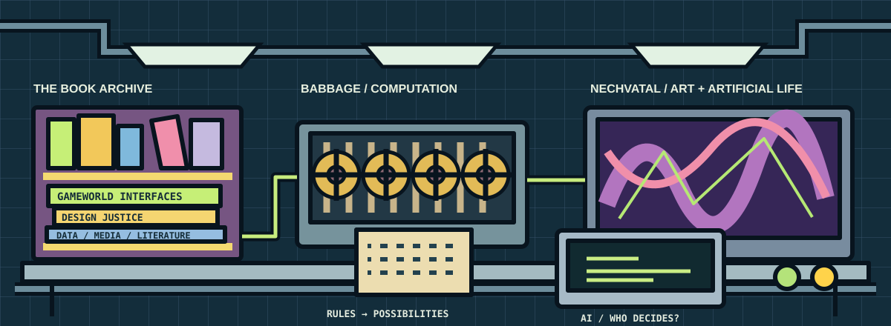

THE LAB / DIGITAL CULTURE
Welcome to the laboratory.
Books, machines, art and ideas. Find the research behind what you want to make.

Meet the ideas behind the laboratory
Charles Babbage: his designs for calculating engines connect this room to the history of programmable machines. See the Science Museum's Analytical Engine trial model.
Joseph Nechvatal: his computer-assisted paintings and artificial-life work connect code, art and aesthetics. Read the artist's introduction.
AI: a tool and a research question. Who contributes, whose material is involved, and how do you evaluate what it produces?
The laboratory is an original illustration, not a reconstruction of a historical room or a reproduction of Nechvatal's artwork.
START HERE / WHAT RESEARCH DO I NEED?
You do not need to know your genre yet.
Describe what your project does. Choose what sounds like your work. Then answer any questions you can. We will suggest what to search for and why. Choose “not sure” whenever you need to. There are no right answers or points.
A project can be a game, electronic literature and an artwork at the same time. A choice button does not automatically make something a game. Text on a screen does not automatically make it electronic literature. Use the result as a starting point to investigate.
YOUR POSSIBLE RESEARCH ROUTES
Where you could start
Use this in your writing: “My project uses ____ to let the participant ____. I am investigating ____ through ____.” Fill this in after reading and testing your project; it is not an automatic genre verdict.
See more kinds of digital work in the table ↓ · Explore the academic sources ↓RESEARCH LAB / EXPLORE YOUR OPTIONS
What would you like someone to do?
Play? Read? Listen? Explore a place? Start with the experience you want to make. Pick a shelf, then open a card that sounds close. You can mix shelves and change your mind.
32 forms and practices to explore
Play and gameworldsInteractive fiction / literary gameReaders choose actions or enter commands that affect a story.Explore this route +
What kind of label? Overlapping genres.
Research question: What makes a choice meaningful rather than merely available?
Fields you could connect: Game studies + literature + philosophy of action.
Search words: interactive fiction agency literary games choice
Play and gameworldsVisual novel / multimodal narrativeText, images, sound and choices tell the story together.Explore this route +
What kind of label? Genre + broader analytical category.
Research question: How do image, language and sound distribute perspective?
Fields you could connect: Game studies + visual culture + literary studies.
Search words: visual novel multimodal narrative branching narrative
Play and gameworldsDigital games: puzzle, platform, simulation and other game genresPeople play through challenges, puzzles, movement or a simulated world.Explore this route +
What kind of label? Broad family / subgenres.
Research question: What do the rules let someone do, and what do those rules value?
Fields you could connect: Game studies + design + psychology.
Search words: game studies puzzle games platform games simulation player experience
Play and gameworldsAlternate reality game (ARG)Clues and characters spill into everyday places, websites or messages.Explore this route +
What kind of label? Game / cross-media practice.
Research question: Where does the fiction end and everyday life begin?
Fields you could connect: Game studies + performance studies + media studies.
Search words: alternate reality game pervasive play transmedia ethics
Play and gameworldsExploration game / walking simulatorExploring a place matters more than winning or scoring.Explore this route +
What kind of label? Game genres.
Research question: How does moving through space tell the story?
Fields you could connect: Game studies + spatial narrative + phenomenology.
Search words: walking simulator environmental storytelling exploration games
Play and gameworldsSerious game / educational game / persuasive gameA game helps people learn, discuss an issue or practise a task.Explore this route +
What kind of label? Purpose-based game categories.
Research question: What does playing teach or argue, and how could you test that?
Fields you could connect: Game studies + education + rhetoric + ethics.
Search words: serious games educational games procedural rhetoric
Words and storiesHypertext / hypertext fictionReaders follow links between fragments.Explore this route +
What kind of label? Form / genre.
Research question: Who chooses the order, and how does that shape meaning?
Fields you could connect: Narratology + literary studies + interface design.
Search words: hypertext fiction reader agency nonlinear narrative
Words and storiesGenerative poetry / generative literatureCode combines words or produces changing texts.Explore this route +
What kind of label? Genre / computational practice.
Research question: Who or what contributes to the text: author, rules, data, reader?
Fields you could connect: Poetics + software studies + philosophy of authorship.
Search words: generative poetry computational creativity authorship
Words and storiesDigital poetry / kinetic typographyWords move, change over time or respond to interaction.Explore this route +
What kind of label? Genre + expressive technique.
Research question: How do timing and movement change the experience of reading?
Fields you could connect: Poetics + visual art + phenomenology.
Search words: digital poetry kinetic typography temporality
Words and storiesCodework / code poetryCode and ordinary language form a creative text together.Explore this route +
What kind of label? Literary practices.
Research question: What becomes readable or unreadable when code enters the poem?
Fields you could connect: Poetics + software studies + philosophy of language.
Search words: codework code poetry software studies
Words and storiesConversational narrative / literary chatbotTalking with a bot or character is the main experience.Explore this route +
What kind of label? Narrative form / interface.
Research question: How does the character invite trust, and what are its limits?
Fields you could connect: Literary studies + conversation analysis + AI ethics.
Search words: literary chatbot conversational narrative AI authorship
Words and storiesDatabase narrative / archival narrativeReaders explore records or fragments to build an account.Explore this route +
What kind of label? Narrative structures.
Research question: Who collected these fragments, and what has been left out?
Fields you could connect: Narratology + archival studies + digital humanities.
Search words: database narrative digital archive narrative fragments
Words and storiesWebcomic / digital comicPanels, drawing and scrolling tell a story.Explore this route +
What kind of label? Sequential art forms.
Research question: What does the screen or scroll change about the sequence?
Fields you could connect: Comics studies + visual culture + literary studies.
Search words: webcomics digital comics scrolling multimodal narrative
Words and storiesDigital zine / web essay / digital essayA digital publication combines essays, artwork or personal writing.Explore this route +
What kind of label? Publication forms.
Research question: Who can publish here, and how does the format shape the voice?
Fields you could connect: Publishing studies + rhetoric + cultural studies.
Search words: digital zines web essays self publishing digital rhetoric
Words and storiesDigital life writing / autobiographical narrativeA digital work presents the maker’s life or a personal memory.Explore this route +
What kind of label? Narrative practices.
Research question: How do you represent other people who share your memories?
Fields you could connect: Literary studies + memory studies + ethics.
Search words: digital life writing autobiography memory identity
Images and screensDigital visual art / generative artThe image, artwork or visual experiment is the main experience.Explore this route +
What kind of label? Art practices.
Research question: How does the process of making an image affect its meaning?
Fields you could connect: Art history + software studies + aesthetics.
Search words: digital art generative art computational aesthetics
Images and screensInternet art / browser artThe work depends on the internet, a browser or online connections.Explore this route +
What kind of label? Art practices.
Research question: How does the network become part of the artwork?
Fields you could connect: Art history + media studies + platform studies.
Search words: internet art browser art network aesthetics
Images and screensDigital video / animation / video essayPeople watch moving images, a short film or an argument made through video.Explore this route +
What kind of label? Formats / practices.
Research question: How do editing, image and sound make an argument or tell a story?
Fields you could connect: Film studies + visual culture + rhetoric.
Search words: digital video animation video essay audiovisual essay
Sound and performancePodcast / audio narrative / sound artPeople listen to a story, conversation, soundscape or sound artwork.Explore this route +
What kind of label? Formats / art practices.
Research question: How does listening create a sense of place or another person?
Fields you could connect: Sound studies + media studies + musicology.
Search words: podcast audio narrative sound art listening
Sound and performanceInteractive music / adaptive soundPeople change or move through a musical or sonic piece.Explore this route +
What kind of label? Sound practices.
Research question: How does sound respond to action and guide attention?
Fields you could connect: Sound studies + musicology + game studies.
Search words: interactive music adaptive audio game sound player experience
Sound and performanceLive coding / algorithmic performanceCode is written or changed as part of a live performance.Explore this route +
What kind of label? Performance practices.
Research question: What does showing the making process add?
Fields you could connect: Performance studies + music + software studies.
Search words: live coding algorave algorithmic performance
People and networksNetprov / networked narrativePeople perform or write a story together through a network.Explore this route +
What kind of label? Genre / participatory practice.
Research question: How is responsibility shared between participants and platforms?
Fields you could connect: Performance studies + sociology + literary studies.
Search words: netprov networked narrative collaborative authorship
People and networksTransmediality / transmedia storytellingThe story develops through several platforms or media.Explore this route +
What kind of label? Cross-media approach.
Research question: What does each medium contribute that the others do not?
Fields you could connect: Media studies + adaptation studies + narrative theory.
Search words: transmedia storytelling worldbuilding participation
People and networksSocial media storytelling / memes / livestreamingPosts, memes, streams or online communities are central.Explore this route +
What kind of label? Platform-based cultural forms.
Research question: Who can participate, and how does the platform shape what is seen?
Fields you could connect: Media studies + sociology + cultural studies.
Search words: social media storytelling meme studies livestreaming participatory culture
People and networksFan fiction / remix / participatory culturePeople rewrite, remix or expand an existing fictional world.Explore this route +
What kind of label? Genres / cultural practices.
Research question: What changes when readers become creators?
Fields you could connect: Literary studies + fan studies + copyright ethics.
Search words: fan fiction remix transformative works fandom
Places, evidence and immersive worldsLocative media / locative narrativeA place or physical route shapes the experience.Explore this route +
What kind of label? Medium / narrative practice.
Research question: How do bodies, places and memories shape what can be experienced?
Fields you could connect: Geography + cultural memory + phenomenology.
Search words: locative narrative place memory spatial storytelling
Places, evidence and immersive worldsInteractive documentary / digital documentaryPeople explore real events, interviews or documentary material.Explore this route +
What kind of label? Documentary forms.
Research question: Whose account is presented, and how can the audience judge its evidence?
Fields you could connect: Documentary studies + history + journalism.
Search words: interactive documentary documentary ethics co-creation
Places, evidence and immersive worldsData visualisation / data storytellingPeople read or explore a chart, dataset, map or data story.Explore this route +
What kind of label? Communication / analytical practices.
Research question: What does the visualisation show, and what does it leave out?
Fields you could connect: Design + statistics + geography + ethics.
Search words: data visualisation data storytelling critical data studies
Places, evidence and immersive worldsVirtual reality / immersive experiencePeople enter and look around a virtual space.Explore this route +
What kind of label? Medium / experiential form.
Research question: What creates the feeling of being there?
Fields you could connect: Media studies + interaction design + phenomenology.
Search words: virtual reality presence embodiment immersive narrative
Places, evidence and immersive worldsAugmented reality / mixed realityDigital material appears over a physical place or object.Explore this route +
What kind of label? Technologies / media.
Research question: How do digital layers change the way a place is understood?
Fields you could connect: Design + geography + heritage studies.
Search words: augmented reality mixed reality place narrative
Places, evidence and immersive worldsInteractive installation / digital performanceBodies, sensors, a performance or a physical installation matter.Explore this route +
What kind of label? Art practices.
Research question: How does bodily participation become part of the work?
Fields you could connect: Performance studies + art history + human-computer interaction.
Search words: interactive installation digital performance embodied interaction
Places, evidence and immersive worldsDigital heritage / virtual exhibitionVisitors explore cultural objects, memories or a virtual exhibition.Explore this route +
What kind of label? Cultural and curatorial practices.
Research question: Who gets to interpret the objects, and whose history is missing?
Fields you could connect: Museum studies + history + design + archival ethics.
Search words: digital heritage virtual exhibition museum interpretation
MIX YOUR OWN ROUTE
A genre label is a starting point, not a box.
A Pride Park project might be an exploration game about belonging. If reading and digital language are central, e-lit research may also help. If it unfolds across a game, social posts and a physical event, investigate transmedia storytelling too.
Say what is actually present in the work. A topic you care about does not, by itself, decide the genre.
| Question | Examples |
|---|---|
| What form does it take? | Game, poem, documentary, comic, podcast. |
| How does it work? | Branching paths, generated text, simulation, live participation. |
| What is its tone or story tradition? | Horror, romance, comedy, fantasy, science fiction, memoir. |
| What do you want to investigate? | Belonging, climate, gender, memory, power, accessibility. |
For games, narrow the search when useful: action, adventure, role-playing, strategy, simulation, puzzle, rhythm, sports or racing. These can overlap too. A horror story might use a puzzle game, a podcast or a visual novel.
Build a search: one form + one question. Try exploration games belonging, podcast identity or digital poetry memory. Start broad, then follow terms you find in scholarship.
See actual works before choosing a name.
Electronic Literature Collection: works and tags · Rhizome ArtBase: digital artworks · MIT Docubase: documentary experiments · Living Glossary: unfamiliar terms
These collections help you discover works and terms. Use academic scholarship to support your argument. Older digital works may need emulation or may no longer run in your browser.
This is a broad, expandable teaching map, not a claim to list every digital-cultural genre. Suggested combinations are from the lab; the reference collections use their own categories.
Browse the academic books →Open the full comparison table: all 32 routes
WHAT KIND OF PROJECT AM I MAKING?
What are you making? Find a useful name.
Start with what the reader or player actually does. Use the table to find possible terms, then search the research. You can belong to several rows at once. A tool such as Construct is not a genre.
This is a starting map of digital culture, not a complete list of everything people make. The digital narrative terms draw on the Living Glossary of Digital Narrative, not one official classification system. It brings genres, techniques and approaches together while keeping their differences visible.
32 routes into research
| What happens in my project? | Possible terms / type | Search for research | Fields to combine | A philosophical question to try |
|---|---|---|---|---|
| Readers follow links between fragments. | Hypertext / hypertext fictionForm / genre | hypertext fiction reader agency nonlinear narrative | Narratology + literary studies + interface design | Who chooses the order, and how does that shape meaning? |
| Readers choose actions or enter commands that affect a story. | Interactive fiction / literary gameOverlapping genres | interactive fiction agency literary games choice | Game studies + literature + philosophy of action | What makes a choice meaningful rather than merely available? |
| Code combines words or produces changing texts. | Generative poetry / generative literatureGenre / computational practice | generative poetry computational creativity authorship | Poetics + software studies + philosophy of authorship | Who or what contributes to the text: author, rules, data, reader? |
| Words move, change over time or respond to interaction. | Digital poetry / kinetic typographyGenre + expressive technique | digital poetry kinetic typography temporality | Poetics + visual art + phenomenology | How do timing and movement change the experience of reading? |
| A place or physical route shapes the experience. | Locative media / locative narrativeMedium / narrative practice | locative narrative place memory spatial storytelling | Geography + cultural memory + phenomenology | How do bodies, places and memories shape what can be experienced? |
| People perform or write a story together through a network. | Netprov / networked narrativeGenre / participatory practice | netprov networked narrative collaborative authorship | Performance studies + sociology + literary studies | How is responsibility shared between participants and platforms? |
| The story develops through several platforms or media. | Transmediality / transmedia storytellingCross-media approach | transmedia storytelling worldbuilding participation | Media studies + adaptation studies + narrative theory | What does each medium contribute that the others do not? |
| Text, images, sound and choices tell the story together. | Visual novel / multimodal narrativeGenre + broader analytical category | visual novel multimodal narrative branching narrative | Game studies + visual culture + literary studies | How do image, language and sound distribute perspective? |
| People play through challenges, puzzles, movement or a simulated world. | Digital games: puzzle, platform, simulation and other game genresBroad family / subgenres | game studies puzzle games platform games simulation player experience | Game studies + design + psychology | What do the rules let someone do, and what do those rules value? |
| The image, artwork or visual experiment is the main experience. | Digital visual art / generative artArt practices | digital art generative art computational aesthetics | Art history + software studies + aesthetics | How does the process of making an image affect its meaning? |
| The work depends on the internet, a browser or online connections. | Internet art / browser artArt practices | internet art browser art network aesthetics | Art history + media studies + platform studies | How does the network become part of the artwork? |
| People watch moving images, a short film or an argument made through video. | Digital video / animation / video essayFormats / practices | digital video animation video essay audiovisual essay | Film studies + visual culture + rhetoric | How do editing, image and sound make an argument or tell a story? |
| People explore real events, interviews or documentary material. | Interactive documentary / digital documentaryDocumentary forms | interactive documentary documentary ethics co-creation | Documentary studies + history + journalism | Whose account is presented, and how can the audience judge its evidence? |
| People listen to a story, conversation, soundscape or sound artwork. | Podcast / audio narrative / sound artFormats / art practices | podcast audio narrative sound art listening | Sound studies + media studies + musicology | How does listening create a sense of place or another person? |
| People read or explore a chart, dataset, map or data story. | Data visualisation / data storytellingCommunication / analytical practices | data visualisation data storytelling critical data studies | Design + statistics + geography + ethics | What does the visualisation show, and what does it leave out? |
| Posts, memes, streams or online communities are central. | Social media storytelling / memes / livestreamingPlatform-based cultural forms | social media storytelling meme studies livestreaming participatory culture | Media studies + sociology + cultural studies | Who can participate, and how does the platform shape what is seen? |
| People rewrite, remix or expand an existing fictional world. | Fan fiction / remix / participatory cultureGenres / cultural practices | fan fiction remix transformative works fandom | Literary studies + fan studies + copyright ethics | What changes when readers become creators? |
| People enter and look around a virtual space. | Virtual reality / immersive experienceMedium / experiential form | virtual reality presence embodiment immersive narrative | Media studies + interaction design + phenomenology | What creates the feeling of being there? |
| Digital material appears over a physical place or object. | Augmented reality / mixed realityTechnologies / media | augmented reality mixed reality place narrative | Design + geography + heritage studies | How do digital layers change the way a place is understood? |
| Bodies, sensors, a performance or a physical installation matter. | Interactive installation / digital performanceArt practices | interactive installation digital performance embodied interaction | Performance studies + art history + human-computer interaction | How does bodily participation become part of the work? |
| Clues and characters spill into everyday places, websites or messages. | Alternate reality game (ARG)Game / cross-media practice | alternate reality game pervasive play transmedia ethics | Game studies + performance studies + media studies | Where does the fiction end and everyday life begin? |
| Exploring a place matters more than winning or scoring. | Exploration game / walking simulatorGame genres | walking simulator environmental storytelling exploration games | Game studies + spatial narrative + phenomenology | How does moving through space tell the story? |
| A game helps people learn, discuss an issue or practise a task. | Serious game / educational game / persuasive gamePurpose-based game categories | serious games educational games procedural rhetoric | Game studies + education + rhetoric + ethics | What does playing teach or argue, and how could you test that? |
| Code and ordinary language form a creative text together. | Codework / code poetryLiterary practices | codework code poetry software studies | Poetics + software studies + philosophy of language | What becomes readable or unreadable when code enters the poem? |
| Talking with a bot or character is the main experience. | Conversational narrative / literary chatbotNarrative form / interface | literary chatbot conversational narrative AI authorship | Literary studies + conversation analysis + AI ethics | How does the character invite trust, and what are its limits? |
| Readers explore records or fragments to build an account. | Database narrative / archival narrativeNarrative structures | database narrative digital archive narrative fragments | Narratology + archival studies + digital humanities | Who collected these fragments, and what has been left out? |
| Panels, drawing and scrolling tell a story. | Webcomic / digital comicSequential art forms | webcomics digital comics scrolling multimodal narrative | Comics studies + visual culture + literary studies | What does the screen or scroll change about the sequence? |
| A digital publication combines essays, artwork or personal writing. | Digital zine / web essay / digital essayPublication forms | digital zines web essays self publishing digital rhetoric | Publishing studies + rhetoric + cultural studies | Who can publish here, and how does the format shape the voice? |
| People change or move through a musical or sonic piece. | Interactive music / adaptive soundSound practices | interactive music adaptive audio game sound player experience | Sound studies + musicology + game studies | How does sound respond to action and guide attention? |
| Code is written or changed as part of a live performance. | Live coding / algorithmic performancePerformance practices | live coding algorave algorithmic performance | Performance studies + music + software studies | What does showing the making process add? |
| Visitors explore cultural objects, memories or a virtual exhibition. | Digital heritage / virtual exhibitionCultural and curatorial practices | digital heritage virtual exhibition museum interpretation | Museum studies + history + design + archival ethics | Who gets to interpret the objects, and whose history is missing? |
| A digital work presents the maker’s life or a personal memory. | Digital life writing / autobiographical narrativeNarrative practices | digital life writing autobiography memory identity | Literary studies + memory studies + ethics | How do you represent other people who share your memories? |
The field combinations and questions are suggestions for your analysis, not definitions taken from the glossary. Compare the glossary entry with scholarship before deciding how to describe your work.
ELMCIP: find creative and critical works · Read about transmediality in the glossary
7 sources
01 / Game interfaces and player experience
Gameworld Interfaces
MIT Press · 2013
A study of how game interfaces communicate the information players need to interact with gameworlds and rules.
Publisher record ↗ · Search Oria ↗
Take a question into your project
What tells a player what they can do, what changed and what to try next?
Return to the relevant workshop →These are suggested questions from the lab, not quotations from the book.
Read the short paper: GWI: The Gameworld Interface (2013, PDF)
The short paper presents a version of the book’s central argument, not the full book.
02 / AI and literature
The Routledge Handbook of AI and Literature
Routledge
Literary approaches to AI and AI in literary practice.
Publisher record ↗ · Search Oria ↗
Take a question into your project
For the vibecoding workshop: what choices did you make, and what did the machine contribute?
Return to the relevant workshop →These are suggested questions from the lab, not quotations from the book.
03 / Narrative and games
Hamlet on the Holodeck: The Future of Narrative in Cyberspace
MIT Press · updated edition, 2017
Digital environments and the possibilities of participatory narrative.
Publisher record ↗ · Search Oria ↗
Take a question into your project
For Construct: what does the visitor do that changes their experience of the story?
Return to the relevant workshop →These are suggested questions from the lab, not quotations from the book.
04 / Media history
The New Media Reader
MIT Press · 2003
A collection of foundational writings in the history of new media.
Publisher record ↗ · Search Oria ↗
Take a question into your project
Connect a historical idea about computing to one interaction you are building.
Return to the relevant workshop →These are suggested questions from the lab, not quotations from the book.
05 / Design and participation
Design Justice: Community-Led Practices to Build the Worlds We Need
MIT Press · 2020
Design, power and community-led practice.
Read open access ↗ · Search Oria ↗
Take a question into your project
For your interface: who gets to take part in deciding what the project should do?
Return to the relevant workshop →These are suggested questions from the lab, not quotations from the book.
06 / Data and power
Data Feminism
MIT Press · 2020
An intersectional feminist approach to data science and data ethics.
Read open access ↗ · Search Oria ↗
Take a question into your project
For your project: whose experience is represented, and whose perspective is absent?
Return to the relevant workshop →These are suggested questions from the lab, not quotations from the book.
07 / Data and power
Algorithms of Oppression: How Search Engines Reinforce Racism
NYU Press · 2018
A critical study of search engines, racism and discoverability.
Publisher record ↗ · Search Oria ↗
Take a question into your project
For research and AI use: how does a platform influence what you can find?
Return to the relevant workshop →These are suggested questions from the lab, not quotations from the book.
MAKE SOMETHING / INVESTIGATE SOMETHING
Building it and studying it can work together.
A game, app or company website can be both a practical project and something you study. “Game studies” is a research field. “Game development” is a making practice. An app is a type of product. None of these tells us the whole genre or purpose.
Game studies
Ask: how do rules, stories, players and communities make meaning?
Try: closely analyse one playable moment or observe how players understand it.
Search: game studies player agency, game aesthetics, Kristine Jørgensen game interfaces.
Game development
Build: mechanics, levels, dialogue, feedback or a working prototype.
Ask: does the design produce the experience you intended?
Try: change one mechanic, playtest both versions and compare what players do.
Search: game design playtesting, level design player guidance.
App and web development
Build: an app, website, interface or useful tool.
Ask: can the intended users complete the task, including people using assistive technology?
Try: watch someone attempt a realistic task. Check keyboard access, feedback and errors.
Search: human computer interaction usability, accessible interaction design.
Interactive work for a company or organisation
Build: a visitor experience, event guide, training tool, exhibition or digital service.
Ask: whose problem are you solving, and does the solution work for those people?
Try: turn the brief into a testable task. Compare what the organisation wants with what participants need.
Search: participatory design, service design user research, design justice.
You can combine these routes. For example: build a game for an organisation, study its interface and investigate inclusion. Follow your assignment requirements when deciding what to document.
AESTHETICS LAB / HOW DOES IT FEEL, AND WHY?
Aesthetics is part of how the work communicates.
Colour, shape, type, images, sound, movement, pace and space can make an experience feel welcoming, tense, playful, confusing or calm. Aesthetics also asks how people experience and judge a work. It is more than adding decoration.
Same task. Different mood.
Switch the style. The words and destination stay the same. Notice what the visual treatment suggests.
PRIDE PARK / VISITOR GUIDE
Find your place.
Explore the park and discover the people who make it feel like home.
Open the map workshop →Calm: quiet colours, generous space and a simple type style.
This is a teaching example, not a screenshot of Ingrid's Pride Park game. These are possible design effects, not findings about what every person feels.
Look and listen
What do colour, contrast, type, images, sound and timing suggest? Do the parts support each other?
Search visual rhetoric, sound aesthetics or game feel.
Connect to meaning
Why is this treatment appropriate for this story, audience or organisation? “I like it” can start the discussion, but explain what the choice does.
Search aesthetic experience, phenomenology or affect digital media.
Test the experience
Make two versions of one screen or scene. Keep the task the same. Ask someone what the style suggests, then watch whether they can use it.
Separate “it looks welcoming” from “I can find the next step”. Appearance and usability can interact, but they are not the same.
Include different people
Check readable text, keyboard focus, captions where needed and reduced-motion preferences. Never use colour alone to carry essential information.
Connect aesthetics to accessibility →Stanford Encyclopedia of Philosophy: Aesthetic Judgment · Research: appearance and usability as distinct factors
Take it into your project: change one aesthetic choice, keep the interaction the same and compare the experience.
Next: choose a source for your question →WORKING ACROSS FIELDS
Combine reading lists. Make the connection precise.
Your project does not have to sit inside one subject. A map story can draw on literature, geography and philosophy. A game can connect ethics, history and visual art. Reading across fields becomes useful when you can show what each source helps you understand.
FROM INGRID'S OWN PROJECT / DIKULT216
Work, study and something you care about.
When I worked for Bergen Pride, I made a Pride Park game in DIKULT216. I could combine work and university, and explore what I care about: belonging and inclusion.
Ingrid Ormevik
Your experience can be a starting point for academic work. For a project like this, you could combine game studies with queer studies, cultural studies and ethics. That is a possible research route, not a claim about the sources used in Ingrid's project.
Try the connection: game design + belonging + inclusion. Ask who feels welcome, what makes participation possible and how the rules express those choices.
Search for queer game studies belonging, inclusive game design or participation ethics. Use relevant readings from different courses, then explain what each contributes.
- Choose a form: what does someone do in your project? Find one or two terms in the table.
- Choose a question: memory, identity, agency, power, place, knowledge or responsibility.
- Combine sources: take one source about the form, one about your question and, if useful, one from another course's reading list. Check that each source actually fits.
- Connect the argument: explain where the sources support, complicate or disagree with each other. Keep their different meanings of a term visible.
Example: a campus story about belonging
Describe it as a locative or hypertext narrative if those terms fit the work. Use narrative theory to discuss the reader's route, cultural geography to investigate place, and philosophy to ask whose experience is recognised. Search combinations such as locative narrative belonging and place memory phenomenology.
This is an example research plan, not an assigned interpretation. Read the sources before making the claim.
Philosophy is a way to sharpen the question.
Agency asks what it means to act or choose. Epistemology asks what counts as knowledge and evidence. Ethics asks about responsibility and consequences. Phenomenology examines experience. Philosophy of technology investigates how technologies shape human life and practice.
Stanford Encyclopedia of Philosophy: Philosophy of Technology · Computer and Information Ethics
Transmedial is not the same as interdisciplinary. A story can unfold across media; a study can combine academic fields. Your project can do both. Several media on one page do not automatically make a transmedia story: ask how each part contributes to the story.
Return to the genre table ↑ · How to read and cite your sources ↓
Read with a question.
- Use the contents or index to locate a relevant chapter. For edited collections, choose a chapter and identify its author.
- Read the passage in context. Separate the author's claim from your own interpretation.
- Record the edition and actual page or locator you used. Cite a chapter by its author, not automatically by the book's editors.
- Use the idea to question a design choice, compare two approaches or develop an argument.
For library access, choose your institution in Oria and check the actual record. A publisher page may offer a preview or require purchase; it is not automatically free full text.
Chicago author-date examples. Follow your assignment instructions and cite the edition you actually read.
Back to your project →